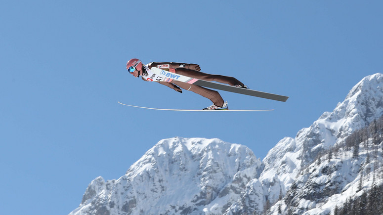
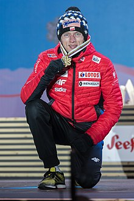
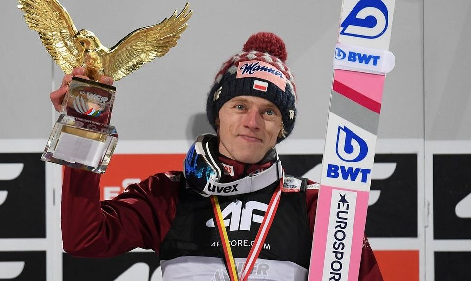

Dawid Grzegorz Kubacki
Dawid Kubacki - polski skoczek narciarski, zawodnik klubu sportowego Wisła Zakopane, członek kadry narodowej. Dwukrotny olimpijczyk. Drużynowy brązowy medalista Zimowych Igrzysk Olimpijskich 2018. Zdobywca trzech medali mistrzostw świata – złotego indywidualnie (2019) oraz złotego (2017) i brązowego (2013) w konkursach drużynowych. Drużynowy brązowy medalista Mistrzostw Świata w Lotach Narciarskich 2018. Zwycięzca 68. Turnieju Czterech Skoczni oraz dwóch edycji Letniego Grand Prix (w 2017 i 2019). Drugi zawodnik klasyfikacji generalnej Letniego Pucharu Kontynentalnego 2015. Czterokrotny letni mistrz Polski. Najwyżej w klasyfikacji generalnej Pucharu Świata uplasował się w sezonie 2019/2020, gdy był 4.
Styl jego skoków charakteryzuje się wysoką parabolą lotu.
Życie prywatne
Rodzice Dawida, czyli Edward Kubacki i Małgorzata Kubacka dokładali największych starań, by ich syn startował w Pucharze Świata w skokach narciarskich. Udało się!
Złoty medalista w drużynie z Lahti urodził się 12 marca 1990 roku w Nowym Targu. W 2018 roku skończy 28 lat! Złoty medalista w drużynie z Lahti urodził się 12 marca 1990 roku w Nowym Targu. W 2018 roku skończy 28 lat! Jest jednym z najwyższych zawodników reprezentacji Polski. Sympatyczny skoczek ma 180 centymetrów wzrostu. Dawid Kubacki studiuje na Akademii Wychowania Fizycznego w Katowicach. Wszystko po to, by już wkrótce szkolić następców i przyszłe gwiazdy reprezentacji Polskiw skokach narciarskich. Dawid Kubacki od kilku lat jest w związku z Martą Majcher. Wspólnie w przyszłości planują założenie rodziny.
Przebieg kariery
Sukcesem Dawida Kubackiego były występy w Letniej Grand Prix 2011, gdzie w wielu konkursach zajmował miejsca w czołówce i ostatecznie został sklasyfikowany na 8. miejscu. Pierwsze punkty PŚ zdobył 1 grudnia 2012 r. w Kuusamo, za zajecie 22. miejsca. Do czołowej „10” zawodów wskoczył 15 grudnia 2012 r., podczas zawodów w Engelbergu. Wówczas zajął 9. miejsce. Kolejne dwa sezony nie były najlepsze w wykonaniu Kubackiego. Najwyżej klasyfikowany był na 16. miejscu w zawodach PŚ w Wiśle. Osiągnął jednak wielki sukces na Mistrzostwach Świata w Predazzo (2013), gdzie z drużyną zdobył brązowy medal. Znacznie lepszy w wykonaniu Dawida Kubackiego był sezon 2016/17, w którym zgromadził 182 punkty w występach indywidualnych oraz 2-krotnie zwyciężał z kolegami w konkursach drużynowych (Willingen, Klingethal). Został drużynowym MŚ w Lahti. Zdecydowanie najlepszy dla Kubackiego był sezon 2017/18. Dawid stał się wówczas filarem kadry oraz notował świetne starty indywidualne. Wywalczył brązowy medal Igrzysk Olimpijskich w Pjongczang.
